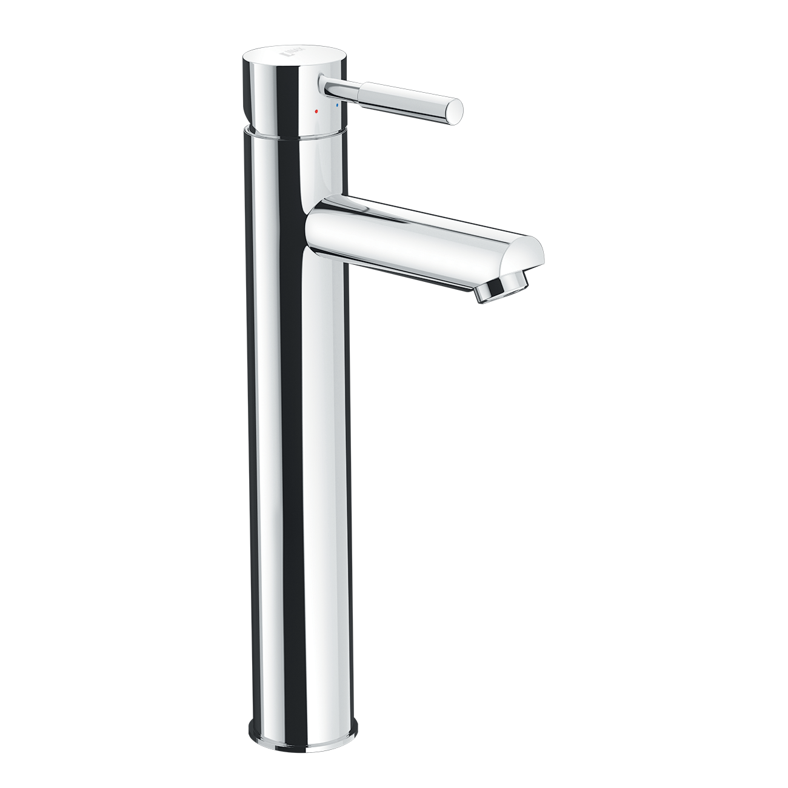
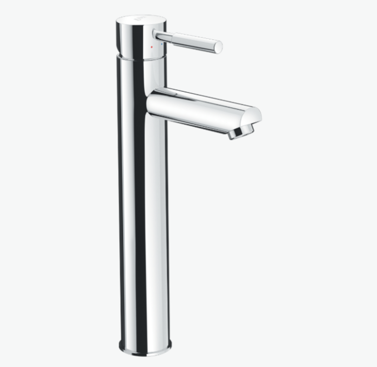
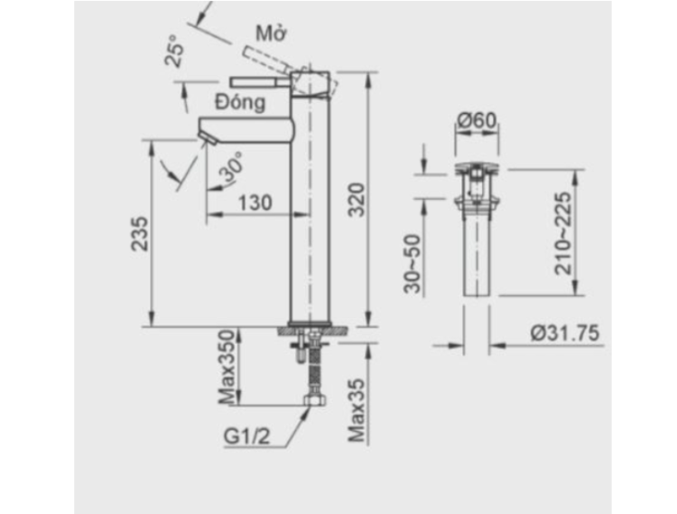

Được thiết kế theo tiêu chuẩn chất lượng Nhật Bản, sen vòi đơn LFV-8000SH2 không chỉ là thiết bị vệ sinh mà còn là khoản đầu tư bền vững cho các công trình dân dụng và thương mại. Đây được xem là một trong những sản phẩm hoàn hảo dành cho không gian phòng tắm hiện đại ngày nay.Chất liệu đạt chuẩn Nhật BảnSen vòi đơn LFV-8000SH2 được chế tạo từ vật liệu cao cấp. Toàn bộ thân vòi được phủ lớp mạ Crom - Niken đạt tiêu chuẩn Nhật Bản. Lớp mạ này không chỉ chống ăn mòn hiệu quả mà còn mang đến vẻ ngoài sáng bóng như mới, dễ dàng vệ sinh và tăng tính thẩm mỹ cho không gian kể cả qua nhiều năm sử dụng trong môi trường ẩm ướt.Van sứ chống rò rỉ nướcVòi lavabo LFV-8000SH2 sử dụng van sứ chất lượng cao, nổi tiếng với độ bền, khả năng chống mài mòn và chống rò rỉ dưới mọi áp lực nước. Nhờ đó, sản phẩm luôn vận hành trơn tru, dễ dàng điều chỉnh dòng nước, nhiệt độ cũng như hạn chế tình trạng nhỏ giọt.Công nghệ xả bọt tiết kiệm nướcLFV-8000SH2 được trang bị tính năng xả dạng bọt giúp dòng chảy nước trơn tru hơn, từ đó tiết kiệm được lượng nước đáng kể so với vòi thông thường. Đây chính là giải pháp thông minh, vừa thân thiện với môi trường vừa mang đến sự thoải mái khi sử dụng.Hai chế độ nóng - lạnh tiện lợiLà vòi nước nóng lạnh, sen vòi đơn LFV-8000SH2 giúp bạn điều chỉnh nhiệt độ linh hoạt. Với chế độ này, bạn có thể chọn nước ấm hay nước lạnh tùy theo nhu cầu sử dụng của bản thân.Thiết kế đặt bàn tinh tếVới kiểu dáng đơn giản nhưng sang trọng, LFV-8000SH2 dễ dàng lắp đặt và phù hợp với nhiều loại chậu rửa mặt. Sự tinh tế trong từng chi tiết và chất liệu hoàn thiện cao cấp biến sản phẩm thành điểm nhấn thanh lịch trong phòng tắm hiện đại.Sở hữu đầy đủ ưu điểm về độ bền, hiệu quả và tính thẩm mỹ, sen vòi đơn INAX LFV-8000SH2 là lựa chọn đáng tin cậy cho những ai tìm kiếm một sản phẩm tiện dụng và sang trọng, xứng đáng với uy tín của thương hiệu INAX Nhật Bản.Bản vẽ sen vòi đơn LFV-8000SH2Thông số kỹ thuậtTên sản phẩmSen vòi đơn LFV-8000SH2LoạiVòi chậu đặt bàn nóng - lạnhChất liệuMạ Crom-Niken đạt tiêu chuẩn Nhật BảnKích thước-Đặc điểm- Van điều khiển bằng sứ có độ bền cao, chống rò rỉ nước - Xả dạng bọt, tiết kiệm nướcThương hiệuINAXKhác- Hotline tư vấn và bảo hành: 18006633
Sen vòi đơn LFV-8000SH2
Vòi chậu thương hiệu INAX.
Đã cập nhật danh sách yêu thích.
DANH MỤC: Vòi chậu
MÃ SẢN PHẨM: LFV-8000SH2
DEPTH: mm
HEIGHT: mm
WIDTH: mm
Được thiết kế theo tiêu chuẩn chất lượng Nhật Bản, sen vòi đơn LFV-8000SH2 không chỉ là thiết bị vệ sinh mà còn là khoản đầu tư bền vững cho các công trình dân dụng và thương mại. Đây được xem là một trong những sản phẩm hoàn hảo dành cho không gian phòng tắm hiện đại ngày nay.Chất liệu đạt chuẩn Nhật BảnSen vòi đơn LFV-8000SH2 được chế tạo từ vật liệu cao cấp. Toàn bộ thân vòi được phủ lớp mạ Crom - Niken đạt tiêu chuẩn Nhật Bản. Lớp mạ này không chỉ chống ăn mòn hiệu quả mà còn mang đến vẻ ngoài sáng bóng như mới, dễ dàng vệ sinh và tăng tính thẩm mỹ cho không gian kể cả qua nhiều năm sử dụng trong môi trường ẩm ướt.Van sứ chống rò rỉ nướcVòi lavabo LFV-8000SH2 sử dụng van sứ chất lượng cao, nổi tiếng với độ bền, khả năng chống mài mòn và chống rò rỉ dưới mọi áp lực nước. Nhờ đó, sản phẩm luôn vận hành trơn tru, dễ dàng điều chỉnh dòng nước, nhiệt độ cũng như hạn chế tình trạng nhỏ giọt.Công nghệ xả bọt tiết kiệm nướcLFV-8000SH2 được trang bị tính năng xả dạng bọt giúp dòng chảy nước trơn tru hơn, từ đó tiết kiệm được lượng nước đáng kể so với vòi thông thường. Đây chính là giải pháp thông minh, vừa thân thiện với môi trường vừa mang đến sự thoải mái khi sử dụng.Hai chế độ nóng - lạnh tiện lợiLà vòi nước nóng lạnh, sen vòi đơn LFV-8000SH2 giúp bạn điều chỉnh nhiệt độ linh hoạt. Với chế độ này, bạn có thể chọn nước ấm hay nước lạnh tùy theo nhu cầu sử dụng của bản thân.Thiết kế đặt bàn tinh tếVới kiểu dáng đơn giản nhưng sang trọng, LFV-8000SH2 dễ dàng lắp đặt và phù hợp với nhiều loại chậu rửa mặt. Sự tinh tế trong từng chi tiết và chất liệu hoàn thiện cao cấp biến sản phẩm thành điểm nhấn thanh lịch trong phòng tắm hiện đại.Sở hữu đầy đủ ưu điểm về độ bền, hiệu quả và tính thẩm mỹ, sen vòi đơn INAX LFV-8000SH2 là lựa chọn đáng tin cậy cho những ai tìm kiếm một sản phẩm tiện dụng và sang trọng, xứng đáng với uy tín của thương hiệu INAX Nhật Bản.Bản vẽ sen vòi đơn LFV-8000SH2Thông số kỹ thuậtTên sản phẩmSen vòi đơn LFV-8000SH2LoạiVòi chậu đặt bàn nóng - lạnhChất liệuMạ Crom-Niken đạt tiêu chuẩn Nhật BảnKích thước-Đặc điểm- Van điều khiển bằng sứ có độ bền cao, chống rò rỉ nước - Xả dạng bọt, tiết kiệm nướcThương hiệuINAXKhác- Hotline tư vấn và bảo hành: 18006633
DANH MỤC: Vòi chậu
MÃ SẢN PHẨM: LFV-8000SH2
DEPTH: mm
HEIGHT: mm
WIDTH: mm